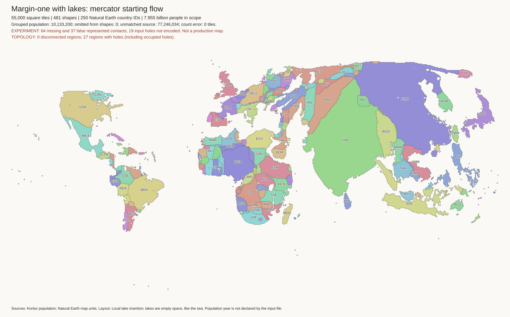
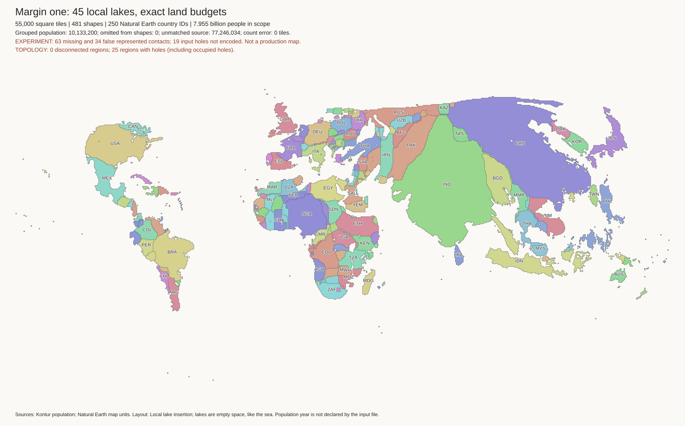
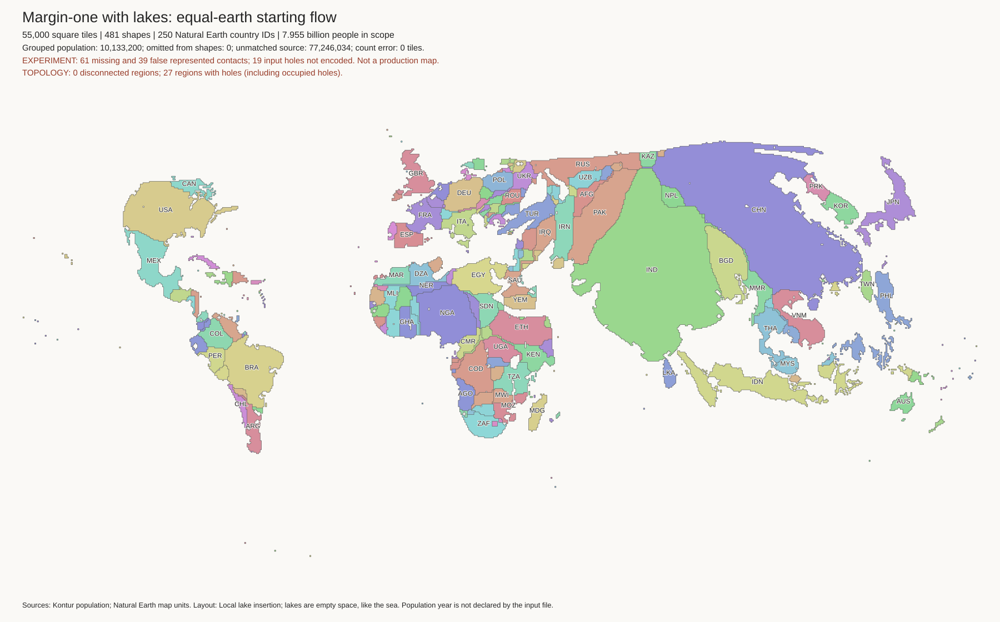

The reference is the preferred local-lakes layout. This experiment repeats its flow, margin-one fit, mainland repair, and lake insertion. Only the starting mainland flow projection changes. It does not use the separate shape-first solver or add permission to break borders.
Neither new run replaces the preferred reference. The Mercator run has two detached component groups. The fresh Equal Earth control also has a regression. Production layouts and H3-MON mapping are unchanged.
Method and commands · Work log · Checked comparison

Europe · Africa and lakes · North America · South America · South Asia · Japan and Korea · Indonesia

| Layout | Land tiles | Missing contacts | False contacts | Lakes / empty cells | Split source landmasses |
|---|---|---|---|---|---|
| Preferred reference | 55,000 | 63 | 34 | 45 / 220 | 0 |
| Fresh Equal Earth control | 55,000 | 61 | 39 | 45 / 220 | 1 |
| Mercator starting flow | 55,000 | 64 | 37 | 45 / 220 | 2 |
All 481 component budgets remain exact. Every individual component is connected. Every named lake cell is empty and does not consume a population tile. A connected component is not the same check as a joined source landmass: a whole component can still be detached from its neighbours.
The Mercator run leaves a 178-tile Malaysian component and a 30-tile Canadian component detached from their source landmass groups. The Equal Earth control leaves Norway and Sweden detached together. The original repair rules were applied unchanged; these remaining defects are reported, not hidden by a new rule.
The lake totals match, but the Mercator lake set differs: Syvash does not fit, while the South Aral Sea now fits. The Equal Earth control retains the reference's lake set. No partial failed lake placement is kept.
In the Mercator run, Estonia, Latvia, and Lithuania retain edges beside exterior water. Paraguay has no exterior-water edge. These checks do not prove that all coast relationships are correct.
Reviewed the world views, Europe, African lakes, North America, and Japan/Korea. The Mercator result retains the joined layout, unlike the separate-country experiments. Russia, China, and India still have substantial distortion. Changing the starting projection alone has not restored the fresh native outlines. The reference remains the current best fit.

The starting Equal Earth geometry matches the archived input byte for byte. The newly solved flow geometry differs from the old solved flow. The cause of this repeatability difference has not been established. Compare the Mercator candidate with both this control and the saved reference.
Both runs completed. All 201 tests pass. No background fit remains active.